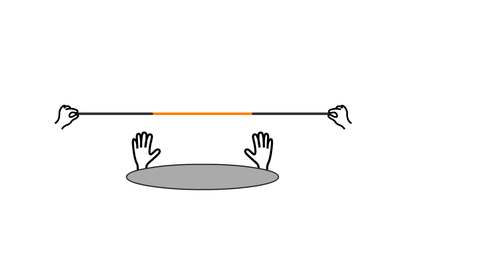
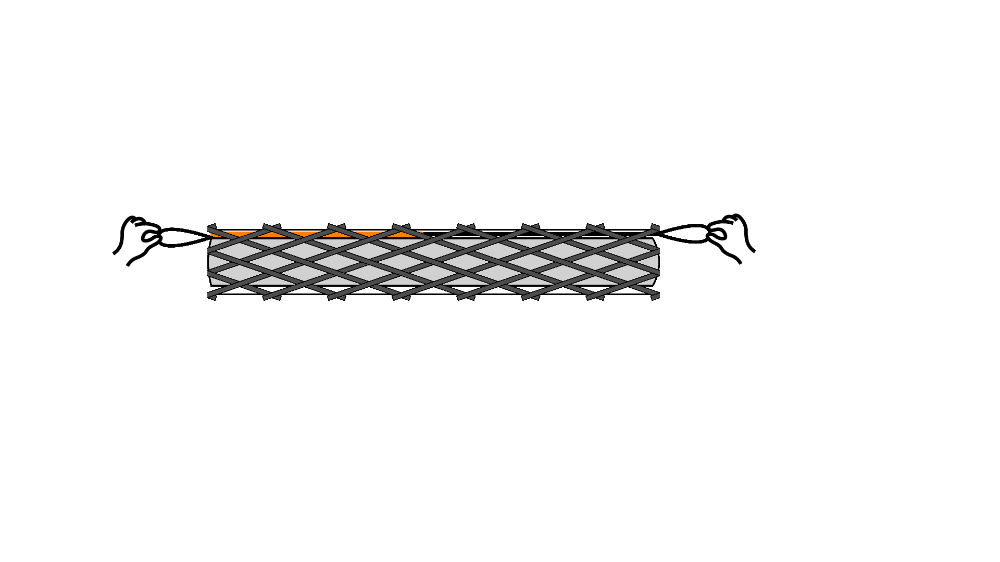
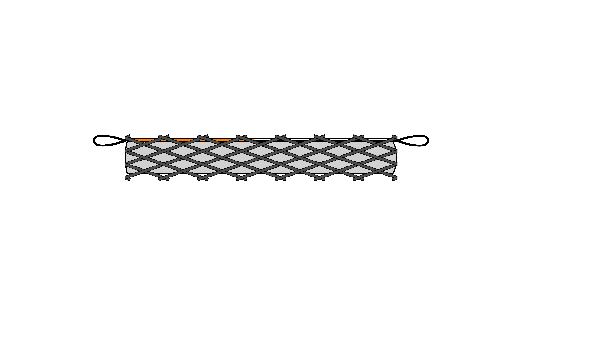

Stretchable muscle
受動的な伸長が可能なマッキベン型人工筋についてです．詳しいデータなどについてはこちら．
この研究では下のgifに示すようにオレンジ色の弾性紐と黒色の伸びない紐により伸長可能な人工筋を実現しています．イメージとしては通常は人工筋と紐が接触せず，普通のゴム紐のように振る舞い，人工筋を駆動させる場合のみ人工筋とゴム紐が一体化し，収縮するような感じです．
実際には，人工筋のゴムチューブとスリーブの間にゴム紐と伸びない紐を直列に接続した紐を入れています．空圧を印加することで繊維ジャミングのように糸がロックされ，その後，収縮します．
この人工筋の作り方の動画です．阪大の増田先生のマッキベン型人工筋のレシピをもとにしていますので，材料等の詳細はそちらにある通りです．追加でゴム紐と普通のひも，LOCTITE 401を用いています．
受動的伸長

能動的収縮

受動的伸長

能動的収縮
